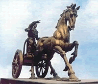
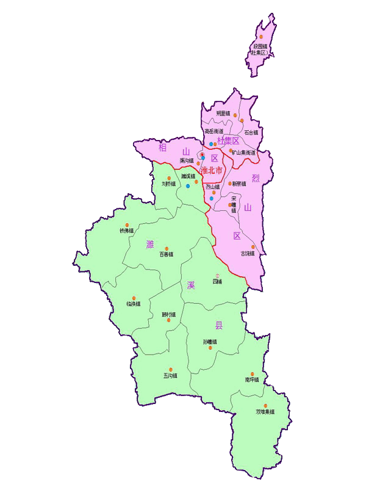

- 关 于 相 城
- 美 文 欣 赏
- 图 片 库
- 我 要 留 言
- 站 外 搜 索
百科名片
淮北市是安徽省的省辖市，地处苏鲁豫皖四省交界、淮海经济区腹 心，市辖一县三区。形成了以煤炭、电力、纺织、酿酒、建材等为支柱的产业格局，年产原煤3000多万吨，电力装机容量210万千瓦，是中国能源基地、农副 产品生产基地和全国塌陷土地复垦示范区。淮北矿产颇丰、品种繁多，其中以煤为最，远景储量350亿吨，工业储量80亿吨；气候宜人、光照充足，是国家和安 徽省重要的粮、棉、畜禽、蚕桑等农副产品生产基地。

中文名称： 淮北 外文名称： Huaibei 别名： 相城 行政区类别： 地级市 所属地区： 中国华东 下辖地区： 相山区等3区1县 政府驻地： 安徽省淮北市相山区人民路208号 电话区号： 0561 邮政区码： 235000 地理位置： 安徽省北部
面积： 2741平方公里 人口： 213.7万人(2007年) 方言： 中原官话（洛徐片） 气候条件： 暖温带半湿润季风气候 著名景点： 龙脊山风景区等 机场： 徐州观音机场 火车站： 淮北站等 车牌代码： 皖F 市花： 梅花、月季 市树： 银杏、国槐
淮北市，古称相邑 、相县、别名称相城。淮北市自有文字记载以来的历史已有4000多年， 约4000年前原始社会末期，中国“上古五帝”之一的颛顼在现淮北市市府所在地相山建城。 淮北市是安徽省的省辖市，地处苏鲁豫皖四省交界、淮海经济区腹心，市辖三区一县：相山区、杜集区、烈山区和濉溪县， 总面积2741平方公里，人口218万人，其中城区户籍人口135.4万人。城市规划区面积420平方公里，城市建成区已达100平方公里，现有24对大 型现代化国有矿井，2010年原煤总产量达6000余万吨，年洗原煤能力4100万吨，出口15个国家和地区，为中国的五大煤炭基地之一。淮北市以原煤为 动力的坑口发电，使他成为华东电网的主力军之一，2010年总装机容量已达800万KW。其中京沪、陇海、符夹等铁路纵横东西南北，6条国道、省道以及京 福、连霍高速公路穿境而过，离徐州观音机场60公里，至连云港港口240公里，是安徽省距深水港口最近的城市。符夹、青阜两条铁路贯通境内。符夹线北连陇 海，南接津浦，有直快列车直达上海。青阜线则经阜阳、淮南直通省府合肥，远达皖南重镇芜湖。随着旅游事业的发展，又开通了淮北至曲阜、泰安、连云港、南京等几十个城市的远程班车。青龙山河港已通航，并正在全力扩建。在不久的将来，从青龙山发出的船只将经新沛河、洪泽湖直通淮河、长江 、黄河。 淮北市现有20多万亩采煤塌陷地自主开发，20多万工程 技术人员和技术熟练的产业工人。良好的投资环境吸引了一批批外商纷至沓来。 
行政区划
淮北市下辖三区一县：相山区、杜集区、烈山区、濉溪县，总面积2741平方公里，人口213.7万人，其中城区户籍人口135.4万人。
淮北市人民政府、市委驻淮北市相山区人民路208号。
牌照：皖F
( onMouseOver 查看大图)
历史文化
沛 郡故址 ，泗水旧治。淮海心腹 ，琴曲千年。做为一个建城有4000多年历史的古城，淮北市显得既古老又青春，既古典又现代。早在夏朝商族部落领袖商汤十一世祖相土率领其部落驾驶着自己 发明的马车，一路风尘向东行进。路途中被葱茏叠翠的淮北古相山所吸引，于是便在这里夯土围城，建城于相山脚下，发文明之滥觞。定居于淮北相山脚下，组成氏 族方国，并聚落城邑，古名相国，国都相邑，邑之主山名曰相山。所以今天的淮北市因这一段历史渊源，故又别名相城。春秋时期宋共公瑕为避水患迁国都于此前后 达90年。
在此后的1000多年间，历代王朝先后在此设郡或州，淮北市一直是历代附近州府的治所，如秦朝 泗水郡兼两汉之沛国.沛郡其郡治国都均在淮北市，以至于史家感叹道两汉时期“泗水郡”虽因刘邦兴汉而更名“沛郡”，但却不能以龙诞之地的沛县之城，夺淮北 市的沛郡之“治”。此为古淮北繁荣时期。蹇叔、桓谭、嵇康与刘伶等先贤圣哲，现代雕塑大师刘开渠，导演陈陈维亚皆生于此或长于斯；临涣古城墙、楼顶山的古岩画群、汉画像石、隋唐古运河柳孜码头遗址，淮海战役总前委旧址、烈士陵园等，传递着凝重、久远的文化信息，展示着一段历史的辉煌。
气象水文
淮北市地处北温带，属北方型大陆性气候与湿润性气候之间的季风气候。四季分明、无霜期202天。 年平均气温14.5℃，极端最低气温-21.3℃（1969年2月5日），极端最高气温41.1℃（1972年6月11日）。 淮北市多年平均降水量844.3 mm，水资源总量 8.341 亿立方米，人均水资源量为398 m3，仅为全国人均水平的1/6、世界人均水平的1/24。
自然资源
土地资源
淮北市土地总面积2741平方公里，其中耕地面积135988公顷，林地面积23266.67公顷，水域面积10000公顷，养殖水面8333公顷，荒沙、荒漠1466.67公顷。再生土地资源优势独特，综合复垦治理后的采煤塌陷区土地已成为该市独特的资源优势。多年来，淮北不断加强采煤塌陷地复垦工作，土地复垦率达到54%以上，位于全国前列。
矿产资源
淮北矿产资源蕴藏量较为丰富。目前，已发现矿产56种，矿产地488处，其中大型矿产地20处，中型矿产地13处，小型矿点455处。在查明储量的16 种矿产中，煤、铁、铜、金、水泥用灰岩、高岭土储量分别居全省第2、4、6、2、6、1、位。其中，煤炭资源最具优势，远景储量350亿吨，工业储量80 亿吨。据科学测定，在二迭纪时期，这里气候温和，四季如春，花草繁茂，古木林立。到了石灰纪，地壳下陷，这里变成了汪洋大海。淮北矿区储量丰富、煤种齐 全、煤质优良、分布广泛、矿床规模较大、综合效益凸现，已成为我国重要的煤炭和精煤生产基地。
生物资源
- 林业资源：现有树种300多个，分属66个科，147个属，其中乔木118种，灌木177种，藤木14种，竹类8种。古稀珍贵树木有古柏、古槐、银杏等。果树主要有杏、桃、核桃、石榴、蜜枣等。
- 农作物资源：农作物有粮、棉、油、果、菜、药、麻、丝等，品种有400多个，其中粮食作物主要有小麦、稻谷、薯类、玉米、高梁、谷子、大豆等，经济作物主要有棉花、麻类、烟叶等，油料作物有花生、油菜、芝麻。
- 水产资源：鱼类资源以草鱼、鲫鱼、鲤鱼、鲢鱼为优势种群，水生经济动物有虾、鳖、牛蛙、泥鳅等，经济植物有池藕、芦苇、蒲草等。
- 畜禽品种资源：畜禽品种丰富，有牛、马、驴、骡、猪、羊、兔、鸡、鸭、鹅等。畜禽生产以资源开发和资源利用为中心，各品种畜禽的饲养都已形成规模生产。
- 野生动物资源：野生动物主要有鸟类、兽类两大类。现有鸟类29科50多种。其中具有经济价值的食用或羽用狩猎类18种，具有观赏价值的4种，保护农林作物的食虫益鸟25种，主要有鸭雁类、鹰类、雕类、燕类、 啄木鸟、黄鼬、狐狸、刺猬、野猫、野兔、蝙蝠、蛇、蝎、蜥蜴等。
- 中药材资源：中药材资源共213科，672种，总蕴藏量约28万担。其中植物类药材140科，571种，蕴藏量26万担，矿物类药材有6种。
农业生产
淮北市地处北温带台属半湿润季风气候，气候温和，日照充足，四季分明。生长期约7个半月。农作物为两年三熟。作物以旱粮为主，盛产冬小麦、棉花、大豆、 玉米、高粱、谷子、芝麻、花生、油菜籽、红黄麻等。在有水源或灌溉条件的地方，可种水稻。雨量较适中，多集中在六、七、八月份，由于降水量的相对集中，且 各月分配不均，易发生春旱、秋涝，春未夏初有西南干热风，气温高、蒸发旺盛，给农业生产带来不利影响。因此，该市水的问题十分突出。节约用水，保护地下水 资源，是个十分重要的问题。现在，在当地政府领导下，正加强排灌基本设施建设，合理利用地下水资源，不断扩大灌溉面积，从而确保农业的发展。 淮北市现有耕地213万多亩。山林57万亩，大多为人工林，属温带落叶阔叶林和阔叶、针叶混交 林，树种繁多，珍贵树种有银杏等。有果园3．5万亩。盛产桃、梨、杏、苹果、葡萄、李、石榴和柿子等温带水果，大平原上四季飘香。牧草地凡7万亩，有利于 畜牧业的发展，主要牲畜有马、牛、羊、猪等。该市优越的地表环境，不仅为农牧副渔等业的发展开创了美好的前景，更可喜的是，这里还有丰富的矿藏资源，已探 明储量的有13种，其中，煤的储量最大。
工业概况
经过50年的开发建设，淮北市现已形成了煤炭、电力、纺织、酿酒、建材、化工等协调发展的工业体系。 以淮北市淮矿集团、皖北煤电为代表的煤炭产业，年产原煤4000多万吨。机械化综采率达58%，原煤入洗率70%以上，煤矸石综合利用率30%以上。规划到2010年全市煤炭年产量达6000万吨。 以淮北市大唐电厂、国安电力为代表的电力产业，年发电106亿度。规划到2010年全市发电装机容量达500万千瓦。 以淮北市华孚色纺、维科印染为代表的纺织印染产业，规划到2010年形成纺织-印染-服装为一体的100万棉纱锭、2亿米布、1.7亿米印染布、3000万件（套）服装的生产规模，建立淮海经济区纺织服务产业区。 以淮北市口子集团、华润啤酒、雨润畜禽、宝迪食品、六和肉鸭、鲁王面粉为代表的农副产品加工业，规划到2010年建成多个大型农产品加工集团或企业，建成皖北地区重要的农副产品加工基地。 以淮北市临涣煤焦化电、雷鸣科化为代表的化工产业，以三九医药、金蟾药业、辉克药业为代表的生 物制药产业，以众志水泥、金岩高岭土、烈山陶瓷为代表的建材产业，以山河智能为代表的机械加工制造产业也在加速发展。这些支柱产业，既形成了较强的主业， 也造就了大批辅业，具有良好的配套条件。 以占地33平方公里的淮北市龙湖工业开发区，是发展高新技术产业、现代加工制造业的重要基地。 工业区区位优势明显，距新城区约9公里，距京福高速公路、连霍高速公路入口均为10公里。园区供水、供电、通讯等“七通一平”基础配套设施初步完成，现已 吸引50余家沿海大型企业入驻。开发区产业导向：电子信息产业、材料产业、机电产业、生物医药产业、纺织与服装产业、新能源和环保产业。
商业发展
淮北市商业较为发达，有很多大型商场。鼎盛国际、东方百货、华松国际、相王国际购物、百货大楼等，此外金鹰国际（淮海时代广场）、韩国商贸城、中泰国际 也即将竣工i营业。大润发、五星电器、宏图三胞、苏果超市、沃尔玛以及淮北本地的大型连锁超市真棒特卖场遍布市区。除此以外，淮北还有大型专业市场6家， 其中相山区4家，分别是：淮北汽车城（占地500亩）、凤凰山农贸城（占地120亩）、盛世商贸城（占地278亩）、兆基家居广场（占地78亩）；杜集区 1家: 中国（淮北）矿业设备博览城（占地730亩）、濉溪县1家：中瑞农产品批发市场（占地150亩）。 诸如中国煤炭机械博览城、盛世商贸城、大华商贸城、东湖商贸城、特种农产品批发市场等。 淮北消费品市场繁荣活跃。“十一五”期间，全市商品购买力明显增强。2009年，全市实现社会 消费品零售总额105.9亿元，是2006年的1.7倍，年均增长17.8%。全市批发和零售业、住宿和餐饮业实现增加值29.41亿元，是2006年的 1.4倍，年均增长12.3%。市场建设规模扩大。“十一五”期间，我市市场改造力度加大，市场建设步伐加快，市场的规模和档次得到了快速提升。2009 年全市各类市场115多个，年营业额超过10亿元的达到10个。久兴批发、盛世商贸城市场、中国矿业设备博览城、淮北汽车城等一批区域性市场建成营业。苏 果、五星电器等知名企业成功入驻我市。超市连锁经营、专营专卖等新型经营业态快速发展。
Young.net ©皖YLY备0221520号
羊羊工作室 版权所有
外地人没想到的淮北之变
风的絮语(淮北市房地产业协会)
前些年，提起淮北，人们脑海中总会出现“煤城”俩字。记得三十年前我们在中学地理课本找家乡所在位置时，就看到这一带标注煤炭资源的符号。想想吧，就连淮北市最早的一所大学，原先也叫淮北煤炭师范学院。外地来求学的大学生曾开玩笑地说，来之前设想校园里是不是有煤堆呢？
有所变化的是，2009年3月，淮北市被列为全国第二批资源枯竭转型试点城市之一。如果说此前，淮北已经未雨绸缪，现在则是紧锣密鼓地正式开始由资源型向山水生态型城市的转换了。通过修复自然生态服务功能，合理利用工业生态资产，追求经济、社会和自然三者协调发展。近期，连煤师院也已更名为淮北师范大学，再不会让人对煤产生“遐想”了。
现在，整个城市给人最简单直观的感受就是：淮北变漂亮了！许多来过本市的外地人都由衷地赞叹：真没想到淮北这么整洁有序．．．．．．

Young.net ©皖YLY备0221520号
羊羊工作室 版权所有
Young.net ©皖YLY备0221520号
羊羊工作室 版权所有